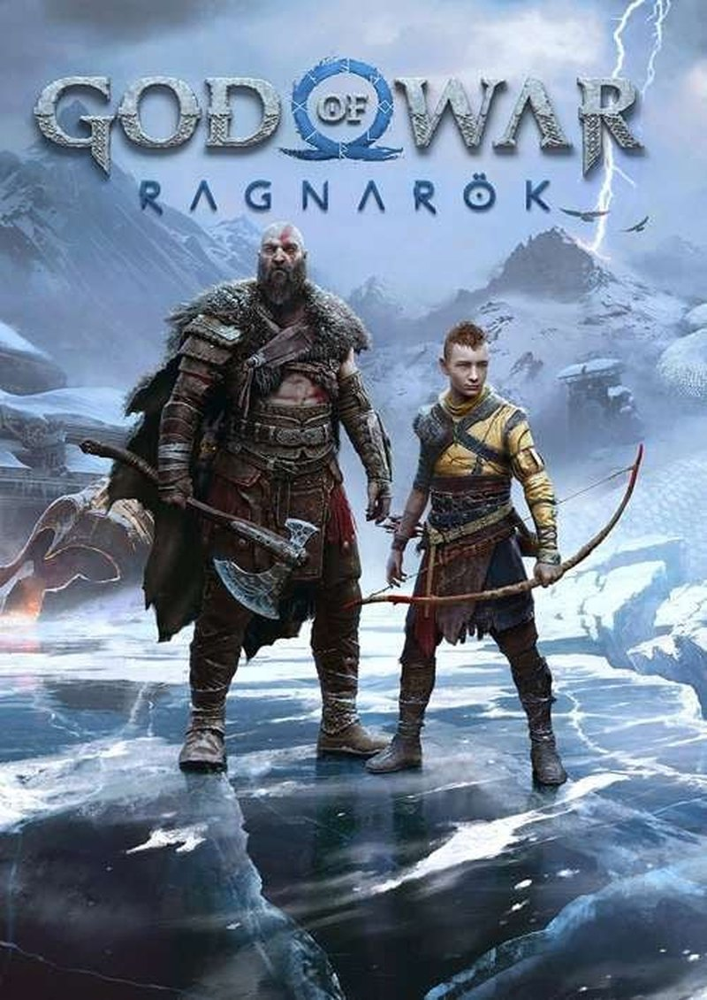

God of War Ragnarök
Kratos and Atreus can't outrun the coming Ragnarök.
Story & lore
With Fimbulwinter dragging into its third year and Odin hunting them across the Nine Realms, Kratos tries to keep his son Atreus from a prophesied fate while Atreus grows increasingly determined to face it head-on. Old family, new alliances among the realms' desperate survivors, and the inevitability of Ragnarök force father and son to finally decide what kind of gods, if any, they want to become.
Translations are written by hand, not machine-translated — new languages are added over time.
Full story — major spoilers Tap to reveal the complete plot
Fimbulwinter's End
Three years after killing Baldur, Kratos and Atreus are hiding in Midgard as the endless winter of Fimbulwinter grinds on, hunted by Asgardian forces. Their aging wolf companion Fenrir dies, and the grief pushes Atreus toward reckless obsession with finding the giant Tyr, believing he holds answers about stopping Ragnarök. Odin himself appears with Thor at their door, offering an uneasy truce if Kratos abandons the search — Kratos refuses, setting father and son on a collision course with Asgard.
Searching for Tyr and Angrboda
Kratos and Atreus track the imprisoned god of war Tyr to Svartalfheim and free him from Odin's dungeon, though Tyr turns out to be a broken pacifist rather than the warrior of legend. In Alfheim they learn a grim truth: only Asgard is truly fated to fall in Ragnarök, while the other realms could survive under new leadership — implying Atreus, in his identity as Loki, is meant to be that new champion. Atreus secretly travels to Jötunheim, where he meets the giant Angrboda and uncovers a mural that seems to foretell Kratos's death during Ragnarök.
Freya's Reckoning
Still estranged since Kratos killed her son Baldur, Freya works against the pair for much of the journey. A confrontation forces Kratos to finally open up about his violent past, and the two begin to reconcile as Kratos helps break the magical binding Odin placed on her. Meanwhile Atreus, terrified of the prophecy, flees to Asgard alone to try to change fate — only for the Norns to reveal a new, darker destiny: that Heimdall is fated to kill him.
The Draupnir Spear and Brok's Death
Racing to save Atreus, Kratos has the dwarf Brok forge the magical Draupnir Spear, the only weapon capable of harming the seemingly invulnerable Heimdall. Atreus frees the imprisoned wolf Garm and resurrects Fenrir before reuniting with Kratos, who kills Heimdall in battle. In the aftermath, Odin — disguised as Tyr — murders Brok in cold blood, devastating his brother Sindri and hardening the group's resolve to end Odin once and for all by sounding Gjallarhorn and igniting Ragnarök.
The Fall of Asgard
Armies from across the Nine Realms unite and lay siege to Asgard as Jörmungandr the World Serpent battles Thor in the skies above. Kratos nearly talks Thor down from the fight, appealing to his exhaustion with Odin's abuse and manipulation, but Odin murders his own son in a fit of rage rather than let him defect. Kratos, Atreus, and Freya then corner and kill Odin together, and the fire giant Surtr — freed as prophecy demands — burns Asgard to the ground, fulfilling Ragnarök at last.
New Fates
In the aftermath, Atreus finds a hidden mural left by his late mother Faye showing that the future isn't fixed — that people can choose their own path — and sets out from Midgard to find the last surviving giants and Angrboda. Kratos discovers murals depicting himself not as a monster but as a beloved god of hope, peace, and justice, finally letting go of some of his self-hatred as the realms settle into a fragile peace under new leadership. The free Valhalla epilogue, added in 2023, follows Kratos alone afterward as he descends into a mystical realm to confront illusions of his past — old enemies and his younger, rage-filled self — ultimately accepting the good he did with the hope he once sacrificed himself to spread, and embracing his new role as a Norse god of war devoted to hope rather than vengeance.